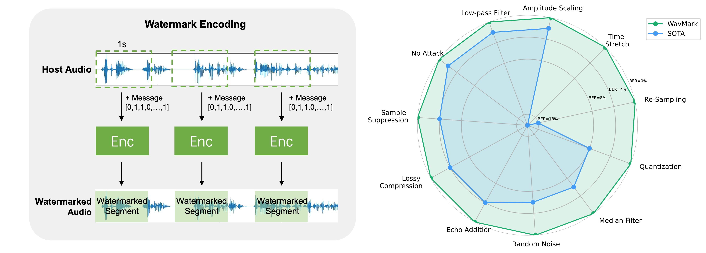

WavMark: Watermarking for Audio Generation
Guangyu Chen†, Yu Wu‡, Shujie Liu‡, Tao Liu†, Xiaoyong
Du†, Furu Wei‡
Microsoft Research Asia‡
Renmin University of China†
Framework Overview

Recent breakthroughs in zero-shot voice synthesis have enabled imitating a speaker’s voice using just a few
seconds of recording while maintaining a high level of realism. Alongside its potential benefits, this
powerful technology introduces notable risks, including voice fraud and speaker impersonation. Unlike the
conventional approach of solely relying on passive methods for detecting synthetic data, watermarking
presents a proactive and robust defence mechanism against these looming risks. This paper introduces an
innovative audio watermarking framework that encodes up to 32 bits of watermark within a mere 1-second audio
snippet. The watermark is imperceptible to human senses and exhibits strong resilience against various
attacks. It can serve as an effective identifier for synthesized voices and holds potential for broader
applications in audio copyright protection. Moreover, this framework boasts high flexibility, allowing for
the combination of multiple watermark segments to achieve heightened robustness and expanded capacity.
Utilizing 10 to 20-second audio as the host, our approach demonstrates an average Bit Error Rate (BER) of
0.48% across ten common attacks, a remarkable reduction of over 2800% in BER compared to the
state-of-the-art watermarking tool.